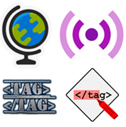
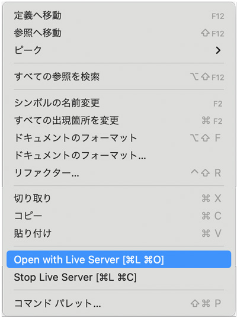
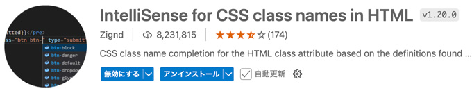
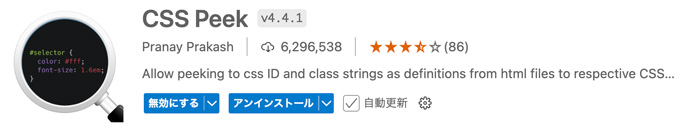

VS Code - 拡張機能

- VS Codeの大きな特徴の一つが優れた拡張性です
- 効率的な開発のために必要な拡張機能を選択しましょう
- 設定を初期設定から変更しないと思いどおりの結果にならない場合があるので注意して導入しましょう
- 起動に時間がかかる拡張機能もあります
- 不要な拡張機能は「無効化」や「アンインストール」をして整理しましょう
Live Server
- ファイル保存と同時に修正内容をブラウザに自動反映
- 簡易ローカルサーバーを構築
HTMLのプレビュー
- 「Go Live」を押す
- 右クリック「Open with Live Server」を選択

入力補助
ZenKaku
- 全角スペースを可視化する
Auto Rename Tag
- ペアになっている開始タグと終了タグ名を同時編集できる機能
Code Spell Checker
- 入力時の英単語のスペルチェックしてくれる機能
HTML CSS Support
- Class名入力時に、CSS側でスタイル適用しているClass名を候補に出力させる補完機能
 
視認性向上
Highlight Matching Tag
- 開始タグと閉じタグにアンダーラインで目印をつける
整形
Prettier - Code formatter
- ソースコードを自動で整形してくれる（自分のルールには整形しにくい）